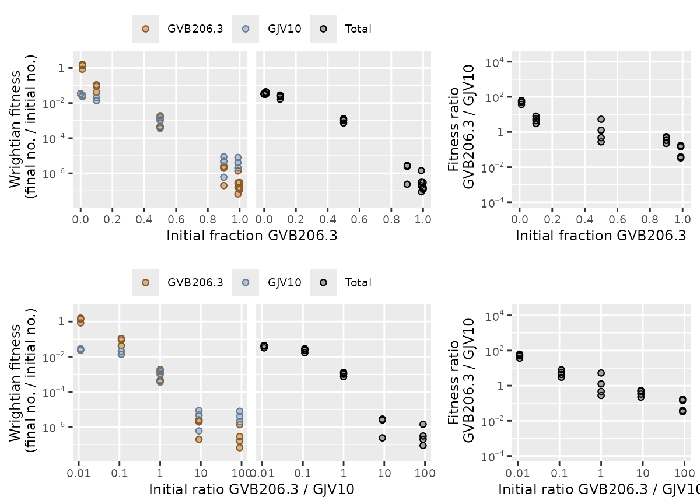
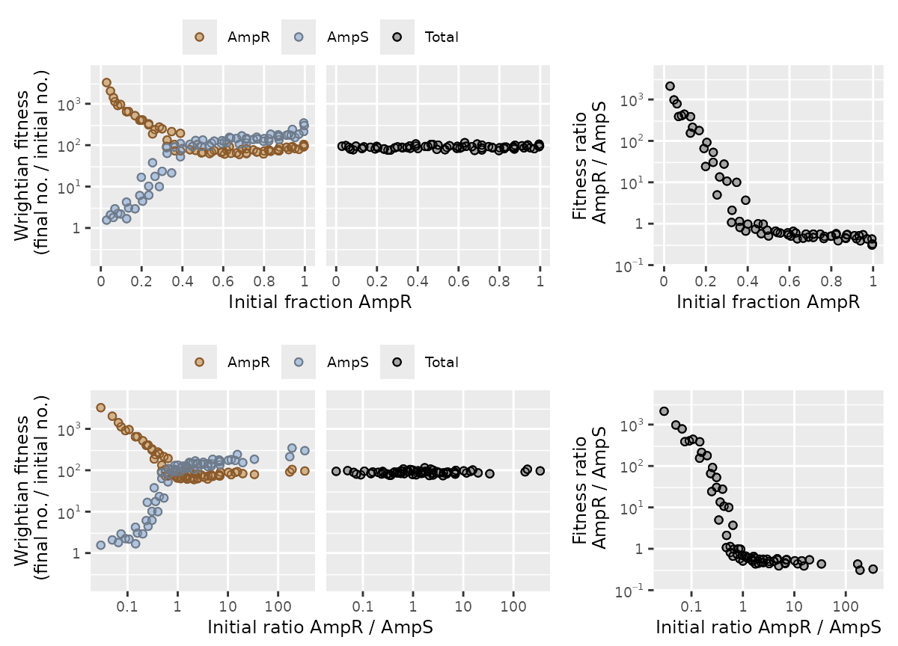
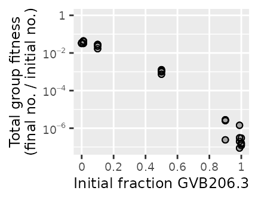
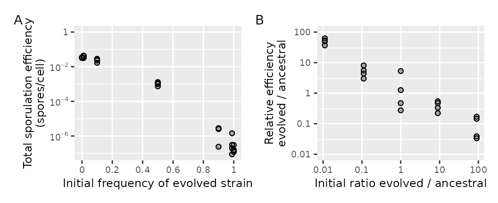
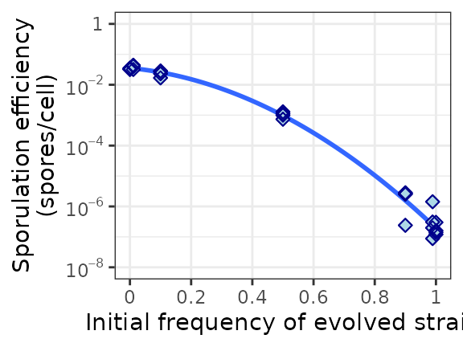
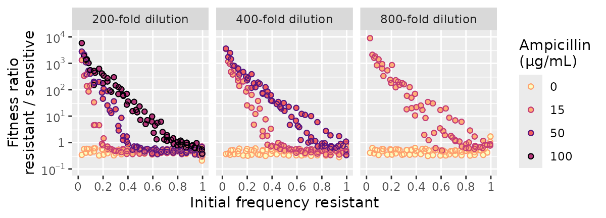

A common way to study interactions among microbes is to do mix experiments. You mix together different microbes (different strains of bacteria, for example) and then see how their behavior depends on mix frequency. How do they act differently together than on their own? How does mixing affect their survival and reproduction—their fitness?
microbimixr is an R package that helps you analyze mix experiments. It helps you get the most out of your data by making it easy to:
- Calculate best-practice fitness measures
- Identify which measures are best for your dataset and research question
- Make publication-quality figures showing interaction effects
The basic workflow is:
- Start from a data frame of observed microbial abundances
- Calculate fitness measures with
calculate_mix_fitness() - Figure out which fitness and frequency measures to use with
plot_mix_fitness() - Plot the fitness data with microbimixr’s built-in functions or its add-ins for ggplot2
- Fit statistical models and plot them with your data
Starting data
The starting point for microbimixr is a data frame that has the observed abundance of each microbe at the beginning of the experiments and at the end. The data could be any combination of strain abundance (like cell counts or cell densities), strain frequency (the fraction of the total), or total group abundance (all strains added together)—anything that’s enough to define the absolute abundance of each strain. Each row of the data frame should have all the data for a single observational unit: one experimental replicate with one strain combination, one mix frequency, one combination of experimental treatments, and so on.
Here’s an example with a dataset that’s included in the package. This is from a small experiment mixing a wild-type strain of Myxococcus bacteria with an experimentally-evolved cheater strain and letting them make multicellular fruiting bodies together (smith et al. 2010). The abundance quantities here are the number of cells from each strain before and after development.
head(data_smith_2010)
#> exptl_block initial_cells_evolved initial_cells_ancestral
#> 1 2009-04-29 5.0e+08 0.0e+00
#> 2 2009-04-29 4.5e+08 5.0e+06
#> 3 2009-04-29 4.5e+08 5.0e+07
#> 4 2009-04-29 2.5e+08 2.5e+08
#> 5 2009-04-29 5.0e+07 4.5e+08
#> 6 2009-04-29 5.0e+06 4.5e+08
#> final_spores_evolved final_spores_ancestral
#> 1 60 0
#> 2 70 20
#> 3 1170 240
#> 4 107000 390000
#> 5 2100000 6300000
#> 6 4210000 10300000Here’s another example. This is from an experiment that grew an
antibiotic-sensitive strain of E. coli together with an
antibiotic-resistant strain that detoxifies its local environment
(Yurtsev et al. 2013). The abundance quantities are total cell
density (in units of OD600) and the fraction of cells that
are the resistant strain (from flow cytometry). The data include several
experimental treatments with different concentrations of antibiotic
(ampicillin) and different amounts of culture growth
(dilution).
head(data_Yurtsev_2013)
#> ampicillin dilution replicate culture_id OD_initial
#> 1 0 100 0 0 0.01438755
#> 2 0 100 0 1 0.01424020
#> 3 0 100 0 2 0.01662601
#> 4 0 100 0 3 0.01394884
#> 5 0 100 0 4 0.01574443
#> 6 0 100 0 5 0.01588097
#> fraction_resistant_initial OD_final fraction_resistant_final
#> 1 -0.0003784523 1.664976 -0.0001694705
#> 2 0.0473674563 1.453604 0.0256142444
#> 3 0.0831943961 1.662601 0.0559489629
#> 4 0.1360970434 1.735172 0.0795238821
#> 5 0.1909207725 1.769998 0.1141049001
#> 6 0.2346178261 1.479329 0.1382856545microbimixr works with most types of microbial abundance data.
Calculate fitness
There are lots of quantities you can calculate to measure microbial survival and reproduction. Many of them work well enough for a particular system and particular research question. But only a few are robust enough to be quantitatively meaningful across different species and different types of interaction (smith & Inglis 2021). microbimixr makes it easy to calculate the good ones.
The function to calculate fitness is
calculate_mix_fitness(). It takes an input data frame of
microbial abundances and a character vector describing what the columns
in the data are. Then it returns a data frame with several measures of
fitness and two measures of mix frequency. Here’s an example:
fitness_myxo <- calculate_mix_fitness(
data = data_smith_2010,
var_names = c(
initial_number_A = "initial_cells_evolved",
initial_number_B = "initial_cells_ancestral",
final_number_A = "final_spores_evolved",
final_number_B = "final_spores_ancestral",
name_A = "GVB206.3",
name_B = "GJV10"
)
)
head(fitness_myxo)
#> name_A name_B initial_fraction_A initial_ratio_A_B fitness_A fitness_B
#> 1 GVB206.3 GJV10 1.00000000 Inf 1.200000e-07 NA
#> 2 GVB206.3 GJV10 0.98901099 90.00000000 1.555556e-07 0.00000400
#> 3 GVB206.3 GJV10 0.90000000 9.00000000 2.600000e-06 0.00000480
#> 4 GVB206.3 GJV10 0.50000000 1.00000000 4.280000e-04 0.00156000
#> 5 GVB206.3 GJV10 0.10000000 0.11111111 4.200000e-02 0.01400000
#> 6 GVB206.3 GJV10 0.01098901 0.01111111 8.420000e-01 0.02288889
#> fitness_total fitness_ratio_A_B
#> 1 1.200000e-07 NA
#> 2 1.978022e-07 0.03888889
#> 3 2.820000e-06 0.54166667
#> 4 9.940000e-04 0.27435897
#> 5 1.680000e-02 3.00000000
#> 6 3.189011e-02 36.78640777The var_names argument tells the function what kinds of
data you have and which strain is which. In the output,
initial_fraction_A and initial_ratio_A_B are
two measures of mix frequency. fitness_A and
fitness_B are the absolute fitness of each strain.
fitness_total is the fitness of the total group or
subpopulation. And fitness_ratio_A_B is the relative
fitness of A to B within the same group.
Here’s an example with the E. coli data:
fitness_ecoli <- calculate_mix_fitness(
data_Yurtsev_2013,
var_names = c(
initial_number_total = "OD_initial",
initial_fraction_A = "fraction_resistant_initial",
final_number_total = "OD_final",
final_fraction_A = "fraction_resistant_final",
name_A = "AmpR",
name_B = "AmpS"
),
keep = c("ampicillin", "dilution")
)
#> Warning: Some fraction_resistant_initial values not in range [0, 1] -- Not
#> biologically meaningful
#> Warning: Some fraction_resistant_final values not in range [0, 1] -- Not
#> biologically meaningful
head(fitness_ecoli)
#> ampicillin dilution name_A name_B initial_fraction_A initial_ratio_A_B
#> 1 0 100 AmpR AmpS -0.0003784523 -0.0003783091
#> 2 0 100 AmpR AmpS 0.0473674563 0.0497226938
#> 3 0 100 AmpR AmpS 0.0831943961 0.0907437691
#> 4 0 100 AmpR AmpS 0.1360970434 0.1575374205
#> 5 0 100 AmpR AmpS 0.1909207725 0.2359729011
#> 6 0 100 AmpR AmpS 0.2346178261 0.3065368309
#> fitness_A fitness_B fitness_total fitness_ratio_A_B
#> 1 51.82082 115.6992 115.72341 0.4478925
#> 2 55.19903 104.4084 102.07749 0.5286838
#> 3 67.25088 102.9718 100.00000 0.6531001
#> 4 72.68639 132.5415 124.39537 0.5484049
#> 5 67.18882 123.0941 112.42060 0.5458331
#> 6 54.90398 104.8752 93.15104 0.5235174Notice the warning messages here.
calculate_mix_fitness() will warn you if any of the data
aren’t biologically meaningful. There can’t be a negative number of
cells, for example, and fractions are bounded at zero and one. Some of
the E. coli data include negative fractions—probably a minor
artifact of correcting for background fluorescence in flow
cytometry.
This example also shows how you can use the keep
argument to include columns in the fitness results for experimental
treatments, experimental block, and so on.
Fitness math
The actual fitness calculations are very simple. If the initial abundance of each strain (measured as the number or density of cells or virions) is and , and their final abundances are and , then
These quantities are unscaled Wrightian fitness measured over the entire time period between the initial and final abundances. They measure fold change in absolute abundance. So if a bacterial strain’s cell density increases 100-fold, for example, its fitness will be . If it decreases to 10% of its initial density, its fitness will be . They’re usually best visualized and analyzed over scales.
These fitness measures are robust across different species and types of interaction (smith & Inglis 2021). They let you quantitatively compare fitness effects across systems. They’re good for statistical analyses of effect sizes and confidence intervals. And they’re directly comparable to fitness terms in theoretical models of microbial evolution.
The two measures of mix frequency are:
initial_fraction_A runs from 0 to 1.
initial_ratio_A_B runs from negative infinity to positive
infinity and is best analyzed over
scales.
Compare fitness measures
Some microbial interaction are easier to visualize, analyze, and interpret with strain-focused fitness outcomes. Others are easier with group-focused outcomes (smith & Inglis 2021). And effects can be more relevant or more linear over one frequency scale than the other.
To see which measures are most useful for analyzing your dataset, use
plot_mix_fitness(). It draws a combined figure with strain
fitness, total group fitness, and relative within-group fitness plotted
against two measures of mix frequency.
plot_mix_fitness(fitness_myxo)
These plots help you see which fitness measures and mixing scales are more informative or easier to analyze. For example, within-group competition among these Myxo strains is negatively frequency-dependent and is a linear function of log mixing ratio.
For complex datasets with many strain combinations or treatment conditions, it may be easier to inspect subsets of the data.
fitness_ecoli |>
subset(ampicillin == 100 & dilution == 100) |>
plot_mix_fitness()
#> Warning in log(data[[var_names$initial_ratio_A_B]]): NaNs produced
This example also shows that microbimixr functions work with the R
pipe |>.
For the interaction between antibiotic-resistant and sensitive E. coli strains shown above, total group fitness is just a constant determined by experimental conditions—how much the culture was diluted when passaged. So the within-group fitness ratio would by itself be a succinct measure of the interesting effects.
Plot fitness with microbimixr functions
Once you know which fitness measures to focus on, you can use microbimixr to visualize them. The simplest way is to use its built-in plot functions:
-
plot_strain_fitness(): Plot fitness of each strain separately -
plot_total_group_fitness(): Plot fitness of total group or subpopulation -
plot_within_group_fitness(): Plot within-group ratio of strain fitnesses
These functions let you reproduce the individual parts of the diagnostic plots. They’re an easy way to plot fitness data with reasonable default settings.
plot_total_group_fitness(fitness_myxo)
They also include some basic plotting options:
fig_total <- plot_total_group_fitness(
fitness_myxo,
xlab = "Initial frequency of evolved strain",
ylab = "Total sporulation efficiency\n(spores/cell)"
)
fig_within <- plot_within_group_fitness(
fitness_myxo,
mix_scale = "ratio",
xlab = "Initial ratio evolved / ancestral",
ylab = "Relative efficiency\nevolved / ancestral",
ylim = c(0.01, 100)
)
fig_total + fig_within + plot_annotation(tag_levels = "A")
This example also shows how to use the patchwork package to combine
subplots with +.
Plot fitness with ggplot2
The fitness-plotting functions use graphics package ggplot2. You can also use microbimixr’s various axes and other plot components when you make ggplot2 figures on your own. These include:
- Mixing axes
scale_x_initial_fraction()andscale_x_initial_ratio() - Fitness axes
scale_y_fitness(),scale_y_fitness_total(), andscale_y_fitness_ratio() - Data points
geom_point_overlap()that easier to read when they overlap
These functions return custom plot elements for ggplot2 that have default settings appropriate for microbial mix experiments.
fitness_myxo |>
ggplot(aes(x = initial_fraction_A, y = fitness_total)) +
scale_x_initial_fraction(name = "Initial frequency of evolved strain") +
scale_y_fitness_total(name = "Sporulation efficiency\n(spores/cell)", limits = c(1e-8, 1)) +
geom_smooth(method = "lm", se = FALSE, formula = y ~ poly(x, 2)) +
geom_point_overlap(shape = 23, fill = "lightblue", color = "darkblue", size = 2) +
theme_bw()
The plot elements are especially useful for more-complex figures with different experimental conditions or multiple strain combinations.
names_Yurtsev <- c(name_A = "resistant", name_B = "sensitive")
name_amp <- "Ampicillin\n(\u03BCg/mL)"
fitness_ecoli |>
subset(
ampicillin %in% c(0, 15, 50, 100) & dilution %in% c(200, 400, 800) &
fitness_ratio_A_B > 0 & is.finite(fitness_ratio_A_B)
) |>
ggplot(mapping = aes(
x = initial_fraction_A, y = fitness_ratio_A_B,
fill = factor(ampicillin), color = factor(ampicillin))
) +
geom_point_overlap(na.rm = TRUE) +
scale_x_initial_fraction(strain_names = names_Yurtsev) +
scale_y_fitness_ratio(strain_names = names_Yurtsev, limits = c(1e-1, 1e4)) +
scale_fill_viridis_d(name = name_amp, option = "magma", direction = -1, begin = 0.5, end = 1) +
scale_color_viridis_d(name = name_amp, option = "magma", direction = -1, begin = 0, end = 0.8) +
facet_wrap(~ dilution, labeller = as_labeller(function(x) paste0(x, "-fold dilution"))) 
References
smith j, Van Dyken JD, and Zee PC (2010) A generalization of Hamilton’s rule for the evolution of microbial cooperation. Science 328: 1700-1703. https://doi.org/10.1126/science.1189675
smith j and Inglis RF (2021) Evaluating kin and group selection as tools for quantitative analysis of microbial data. Proceedings B 288: 20201657. https://doi.org/10.1098/rspb.2020.1657
Yurtsev EA, Chao HX, Datta MS, Artemova T, and Gore J (2013) Bacterial cheating drives the population dynamics of cooperative antibiotic resistance plasmids. Molecular Systems Biology 9: 683. https://doi.org/10.1038/msb.2013.39